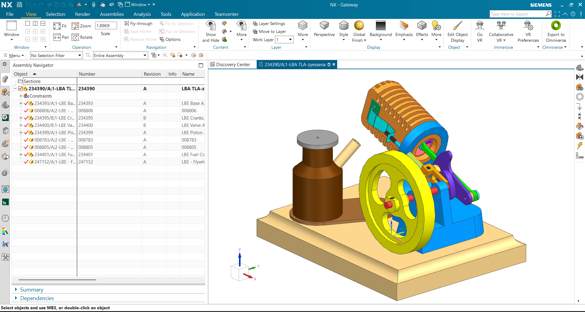

← Work / 05
Little Blazer Engine CAD Assembly
A complete stationary engine built as a parametric assembly in Siemens NX — every part modelled from scratch, gathered into subassemblies, documented with drawings, and version-controlled in Teamcenter.

What it involved
- Modelled every component as a parametric part, then gathered them into subassemblies so a dimension change propagates rather than needing a redraw.
- Produced engineering drawings and 3D annotations documenting component geometry and the relationships between mating parts.
- Managed revision-controlled parts and assembly data in Teamcenter, working to PDM/PLM workflows rather than loose files on a disk.
Assembly breakdown
- 234393 Base assembly
- 234395 Crankshaft
- 234400 Valve assembly
- 234399 Piston
- 234401 Fuel components
- 247152 Flywheel
Top level 234390 — revision A, constraint-driven.